Released product main c551061 - documentation-review draft
Answer Part 1 - Git Use with Engineering Workflow
Author: iceswift. Peer reviewer and merge performer: Richyboy170. Feature PRs target lab3-staging; release PRs target main. Release PR #57 was reviewer-approved and reviewer-merged on 2 October 2026 at 01:57 UTC (08:57 Bangkok). Released product source: c551061806a9b4eeea3e51967afc8418f7c50ab1. The report is a documentation-review draft; product release and report approval are distinct.
A further UI audit opened Issue #58 after this released-main checkpoint: edit fields could retain another account's values, and queue priority badges were missing. Corrections and two regression tests are on the review branch, not released main. Client 29/29 and both builds passed on that branch. The final Kanban must be captured again after Issue #58 integration; the earlier Done captures below describe the pre-#58 product-release checkpoint, not the current complete state.
Traceability: Issue/PR pairs 31/32, 35/37, 38/39, 40/41, 43/44, 46/47, 48/49, 51/52, and correction 55/56. Correction release: PR #57. The Kanban captures below are overlapping genuine views, not a reconstructed board: all 21 cards were Done and the five other columns were empty at the capture checkpoint. Issue #43 was closed late during this audit; the chronology is not backdated. Development links 43/44 and 46/47 were also reconciled during this audit.
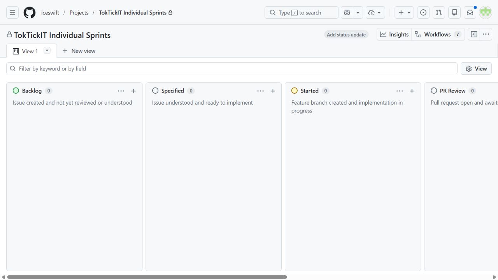
Figure 1. Final product Kanban: Backlog, Specified and Started are empty.
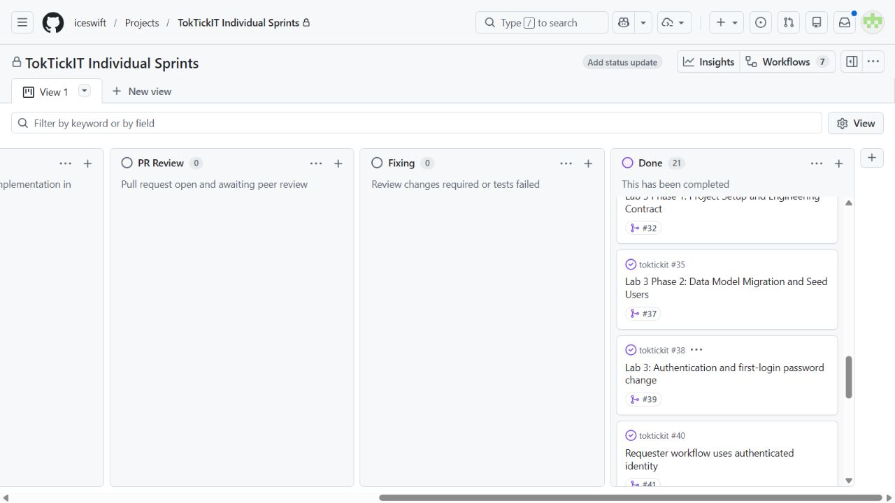
Figure 2. Final Kanban Done column, first Lab 3 cards: engineering contract, migration, authentication and Requester workflow.
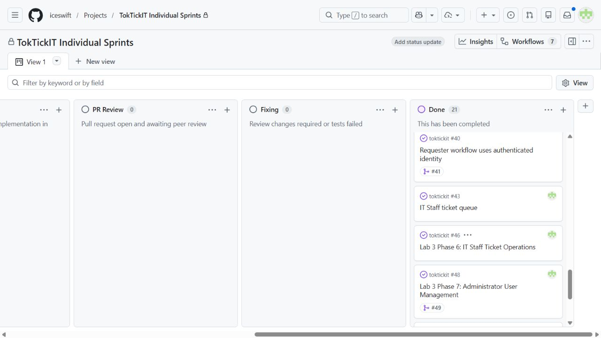
Figure 3. Final Kanban Done column, middle Lab 3 cards: staff queue, operations, administration and QA.
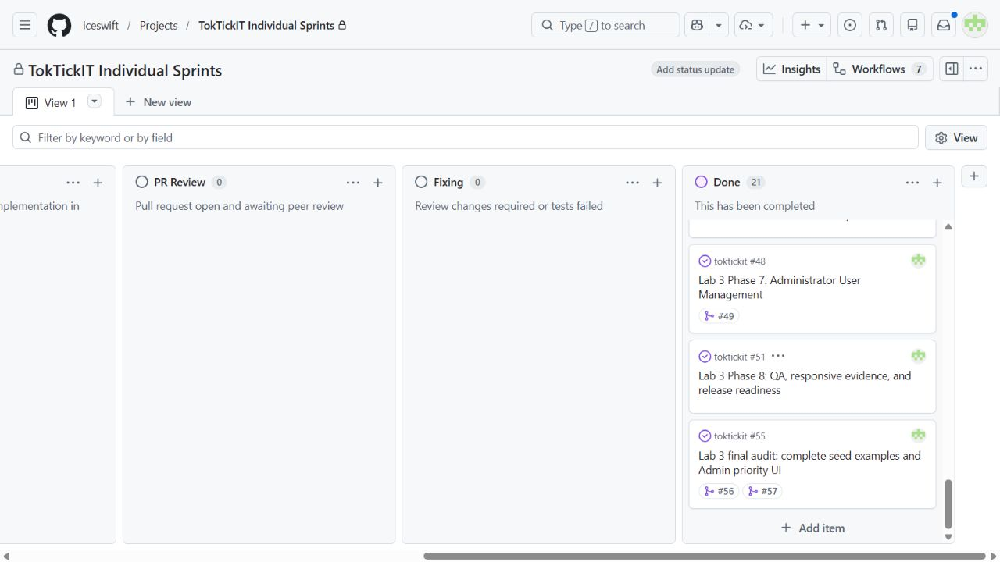
Figure 4. Final Kanban Done column, final Lab 3 cards including correction Issue #55 linked to PRs #56/#57.
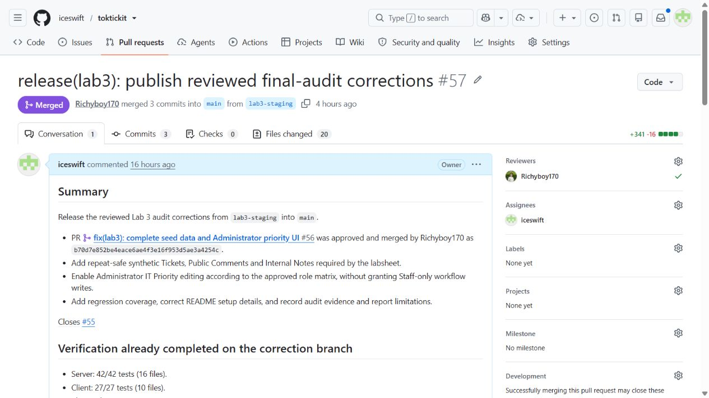
Figure 5. Release PR #57 is Merged from lab3-staging into main; Richyboy170 performed the merge.
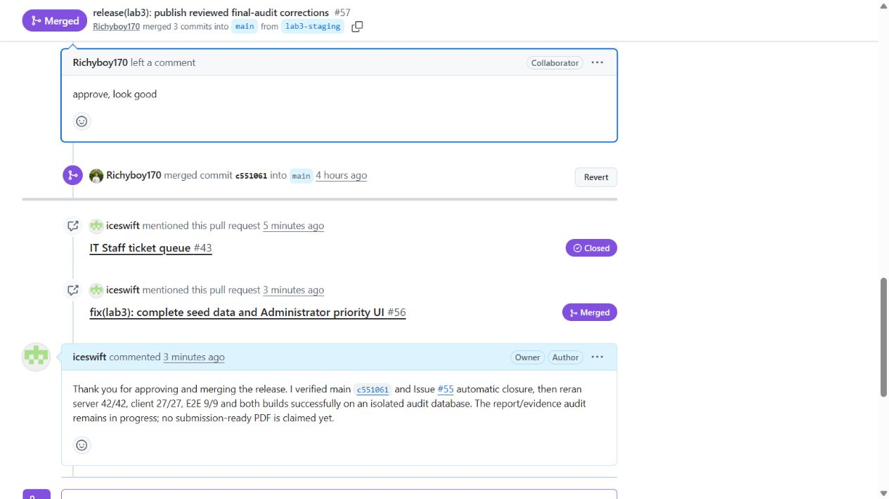
Figure 6. Actual reviewer approval and merge events for Release PR #57.
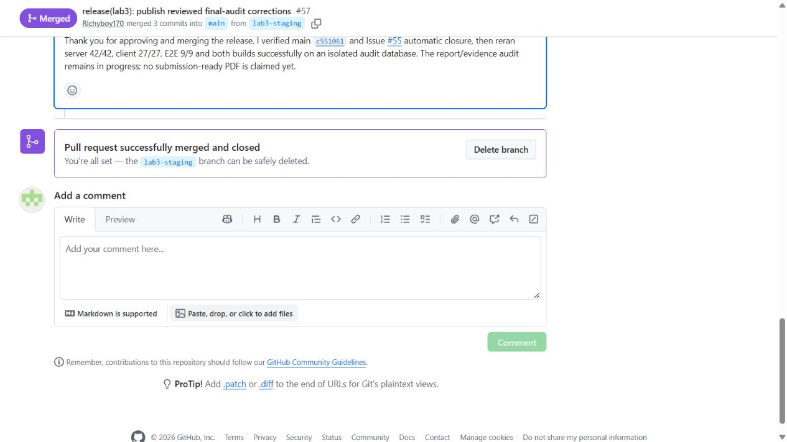
Figure 7. Author acknowledgement of the release review, posted during the final audit.
* c551061 (HEAD -> docs/lab3-released-main-report, origin/main) Merge pull request #57 from iceswift/lab3-staging
|\
| * b70d7e8 Merge pull request #56 from iceswift/feature/lab3-final-audit-fixes
| |\
| | * 20b3493 (feature/lab3-final-audit-fixes) docs(lab3): record verified audit review and backlog checkpoints
| | * 00a2826 fix(lab3): complete seed examples and admin priority permission
| |/
* / c9567a5 (main, feature/lab3-seed-admin-priority, docs/lab3-final-submission-audit) Merge pull request #54 from iceswift/lab3-staging
|/
* 002abfb Merge pull request #53 from iceswift/docs/lab3-phase8-completion-evidence
|\
| * aa18ae5 docs(lab3): record Phase 8 reviewer merge
|/
* e7d5820 Merge pull request #52 from iceswift/feature/lab3-8-qa-release-readiness
|\
| * db9dbf9 test(lab3): complete QA and release readiness
|/
* 293f64f Merge pull request #50 from iceswift/docs/lab3-phase6-7-completion-evidence
|\
| * 08f2c63 docs(lab3): record Phase 6 and 7 completion evidence
|/
* 64afcd9 Merge pull request #49 from iceswift/feature/lab3-7-administrator-user-management
|\
| * 9a29dbb test(lab3): complete administrator user management
| * f98e124 feat(lab3): add administrator user management
|/
* 79cee7b Merge pull request #47 from iceswift/feature/lab3-6-it-staff-ticket-operations
|\
| * 8908655 feat(lab3): add IT Staff ticket operations
|/
* 2be944b Merge pull request #45 from iceswift/docs/lab3-phase5-completion-evidence
|\
| * 376589b docs(lab3): record Phase 5 completion evidence
|/
* f1f51c8 Merge pull request #44 from iceswift/feature/lab3-5-it-staff-ticket-queue
|\
| * efdd033 feat(lab3): add IT Staff ticket queue
|/
* aa278cd Merge pull request #42 from iceswift/docs/lab3-phase4-completion-evidence
|\
| * a01260c docs(lab3): record Phase 4 completion evidence
|/
* d48c2c8 Merge pull request #41 from iceswift/feature/lab3-4-requester-authenticated-identity
|\
| * 1e7ed5a docs(lab3): record Phase 4 review response
| * 8c5d5b7 fix(lab3): authorize requester data by User identity
| * fe972e3 docs(lab3): capture Phase 4 review checkpoint
| * b85ec0c feat(lab3): bind requester flows to authenticated sessions
|/
* cd48ee3 Merge pull request #39 from iceswift/feature/lab3-3-authentication
|\
| * 3d34f8a feat(lab3): add secure authentication sessions
|/
* fce5346 Merge pull request #37 from iceswift/feature/lab3-2-user-migration
|\
| * 975cab6 feat(lab3): migrate requesters to role-based users
|/
* 6d7864b Merge pull request #36 from iceswift/docs/lab3-part1-evidence
|\
| * 6d16a23 docs(lab3): complete phase 1 workflow evidence
| * ff83231 docs(lab3): begin HTML report source
|/
* 42079a7 Merge pull request #32 from iceswift/feature/lab3-1-engineering-contract
* 2eeffe8 docs(lab3): clarify auth and comment contract
* ee74c14 docs(lab3): define engineering contract and test plan
Contract-before-implementation proof: engineering-contract commits ee74c14 and 2eeffe8 were integrated in PR #32 / merge 42079a7 before migration commit 975cab6, authentication commit 3d34f8a and subsequent feature commits. The graph preserves feature merges into staging and staging releases into main.
docs/lab-03/reviewer.md
Lab 3 Peer Review Record
This record includes phase-time entries and verified corrections added during the final audit. Audit additions are identified explicitly, not represented as contemporaneous phase records.
One review comment with four suggestions: use User.id/Ticket.requesterUserId as the ownership boundary; add a mismatched-migration fixture; revoke helper-created test sessions; extract named requester middleware with focused tests. All four were addressed in commit 8c5d5b7; the author replied on PR #41 and re-requested review.
Richyboy170 re-checked and approved the follow-up changes, then merged PR #41 into lab3-staging. Merge commit: d48c2c8. After acceptance confirmation, Issue #40 was closed as completed and its Project status moved to Done.
5 IT Staff Ticket Queue / #43 (Closed; Project Done)
No inline review changes were requested. The PR description records the queue contract, UI states, and focused API/UI test results.
Richyboy170 approved PR #44 and merged it into lab3-staging. Merge commit: f1f51c8. Issue #43 was then closed as completed and its Project status moved to Done.
No corrective review comment was required. The PR covered Ticket detail, claim/reassignment, IT Priority, status transitions, Public Comments, Internal Notes, authorization, and focused API/UI tests.
Richyboy170 approved and merged PR #47 into lab3-staging. Merge commit: 79cee7b.
The completed PR added administrator-only list/search/filter/create/edit/password-reset workflows, responsive forms, and frontend/backend coverage. No corrective review comment was requested.
Richyboy170 approved the implementation as aligned with Issue #48 and merged PR #49 into lab3-staging. Merge commit: 64afcd9.
The PR records complete server, client, E2E, build, migration, responsive, and documentation verification. It also corrected requester comment/resolution coverage and mobile User Management overflow. No corrective review comment was requested.
Richyboy170 merged PR #52 into lab3-staging. Merge commit: e7d5820. Issue #51 was then closed as completed.
Review rules: each PR is linked to its Issue in GitHub's Development panel; the author replies to every review comment; corrections remain on the same branch; the reviewer approves and performs the merge into lab3-staging. The release PR is also reviewer-merged into main.
Verified final-audit additions - 1 October 2026
Record
Verified result
Phase 2 / Issue #35 / PR #37
feature/lab3-2-user-migration to staging. Richyboy170 submitted an APPROVED review and merged on 16 September; merge fce5346bccddfbc5cd496b4f81f41280948ed8c9.
Phase 3 / Issue #38 / PR #39
feature/lab3-3-authentication to staging. Richyboy170 submitted an APPROVED review and merged on 17 September; merge cd48ee3551b052c66f1debacbb2c9f8ea534ad22.
Richyboy170 merged into main on 21 September 2026, 14:02 UTC. Released baseline: c9567a59e183f44cc0f5abea61f7db2097ae5be4. This does not include subsequent audit corrections.
Phase 7 Issue #48 reconciliation
Closed as completed on 1 October after verifying already-merged PR #49 and administrator safety tests. This was a late backlog correction, not a new implementation merge.
feature/lab3-final-audit-fixes to staging; Development linkage verified. Richyboy170 requested as reviewer. OPEN, awaiting peer review and reviewer merge; not released. Local branch results: server 42, client 27, E2E 9 passing; both builds pass.
Released-main reconciliation - 2 October 2026
- PR #56 was approved and merged by Richyboy170 into lab3-staging on 1 October. Merge: b70d7e852be4eace6ae4f3e16f953d5ae3a4254c.
- Release PR #57 was approved and merged by Richyboy170 into main on 2 October 2026 at 01:57 UTC. Merge: c551061806a9b4eeea3e51967afc8418f7c50ab1. Issue #55 closed automatically; its Project status is Done.
- Author acknowledgements: PR #56 reply, PR #57 reply. These are late audit acknowledgements, not replies made before the original merge.
- Additional late acknowledgements were posted for review-summary comments on PRs #32, #37, #39, #44, #47, and #49. The earlier statement that an absence of inline comments meant no reply was required was too narrow; these replies do not retroactively establish timely pre-merge conversation.
- Actual Development links for Issue #43 / PR #44 and Issue #46 / PR #47 were added during the 2 October audit. Closing keywords in descriptions had not created these links for staging-targeted PRs.
- Issue #43 remained Open despite its earlier Done card and merged PR #44. It was closed during the 2 October audit, not immediately after the original merge. This corrects the inaccurate chronology in the historical Phase 5 row above.
- The released source at c551061 passed server 42/42, client 27/27, browser E2E 9/9, both builds and migration status (seven migrations, no pending migration). There were no GitHub CI checks on PR #57; these are actual local verification results.
An absence of inline comments alone does not establish that no response was required: ordinary conversation comments and review-summary comments must also be checked. Historical rows describe their recorded checkpoints; final submission must include actual comment/reply evidence rather than infer completeness from an approval badge.
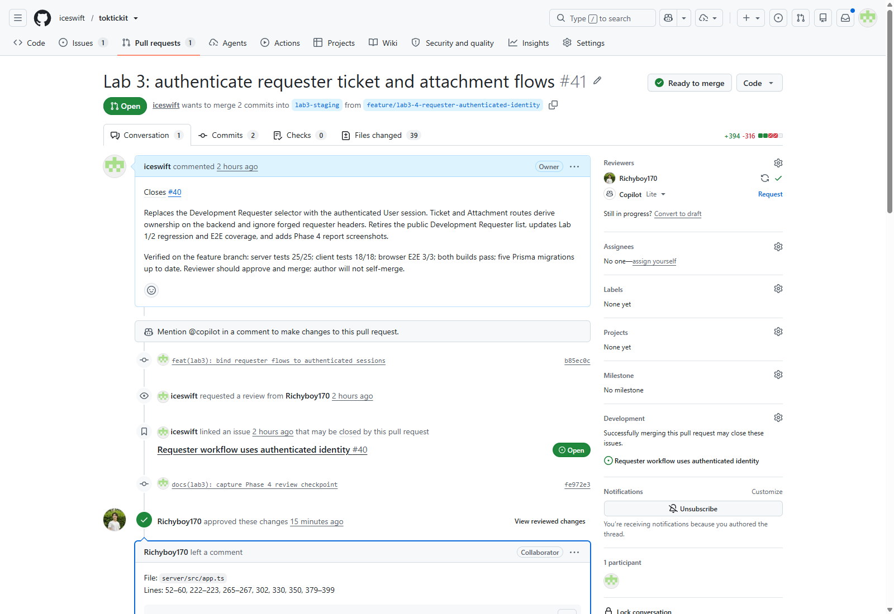
Figure 8. PR #41 technical review: four concrete suggestions, not only an approval badge. Historical checkpoint.
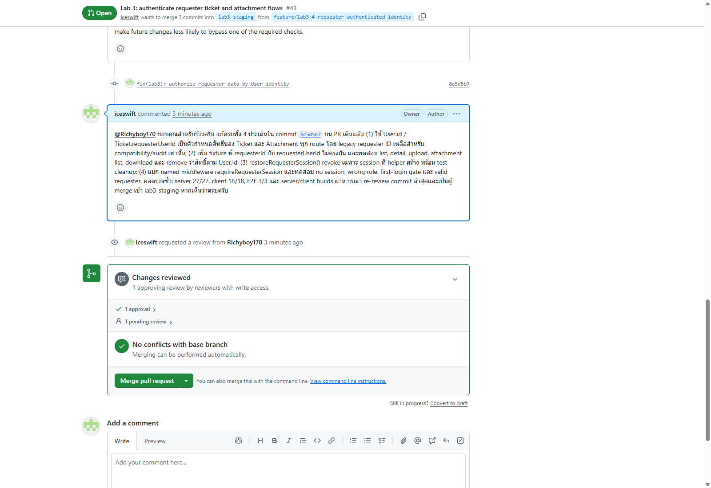
Figure 9. Author response to PR #41 review points and re-requested review after correction commit 8c5d5b7. Historical checkpoint; final reviewer merge is recorded in reviewer.md.
README.md
TokTickIT
TokTickIT is an IT service desk application developed for CPE334 Labs 1-3. This repository demonstrates a full-stack vertical slice using React, Express, Prisma, and PostgreSQL.
Lab 2 adds a Requester-facing Ticketing MVP. A temporary Development Requester selection context can create Tickets, view only its own paginated My Tickets list, inspect an owned read-only detail screen, and manage permitted Attachments. Lab 3 replaces that temporary selector with authenticated Requester identity and adds secure sessions, role authorization, IT Staff operations, Administrator user management, Public Comments, private Internal Notes, and responsive QA coverage.
Technology stack
- Frontend: React, TypeScript, Vite, and Bootstrap
- Docker Desktop, or a local PostgreSQL installation
Local setup
1. Start PostgreSQL:
docker compose up -d postgres
The Lab 3 database is exposed on host port 5434 to avoid conflicting with an existing local PostgreSQL installation.
2. Configure and install the backend, then prepare the database:
cd server
cp .env.example .env
npm install
npx prisma generate
npx prisma migrate deploy
npm run prisma:seed
npm run dev
3. In another terminal, configure and install the frontend:
cd client
cp .env.example .env
npm install
npm run dev
4. Open http://localhost:5173 in a browser. The API listens on http://localhost:3000.
The seed command is idempotent. It preserves the Lab 2 catalogue and creates the Lab 3 Requester, IT Staff, and Administrator accounts used by the documented test scenarios. It also creates eight synthetic Tickets across all statuses, four Requesters, three Requested Priorities, and assigned/unassigned ownership, each with a safe Public Comment and private Internal Note. Stable demo Ticket numbers are TKT-20260901-DEMO0001 through DEMO0008. Repeating the seed preserves worked Ticket fields and existing credentials and does not duplicate the example communication. These fixtures and the initial password Lab3Initial!2026 are for local development only; first login requires a password change.
REST endpoints
- GET /api/health returns the TokTickIT API health status.
- GET /api/categories returns the categories stored in PostgreSQL in a predictable order.
- GET /api/development-requesters is retired in Lab 3 and does not enumerate identities.
- POST /api/tickets creates a validated Ticket for the authenticated Requester.
- GET /api/tickets returns only the authenticated Requester's searchable, filterable, sortable, paginated Ticket list.
- GET /api/tickets/:ticketId retrieves an owned Ticket Detail.
- POST /auth/login, POST /auth/change-password, POST /auth/logout, and GET /auth/me implement the Lab 3 session lifecycle.
- GET /staff/tickets and the protected Staff Ticket operations implement the role-protected queue and workflow. Administrators can view detail and change IT Priority, but cannot perform Staff-only ownership/status/comment/note writes.
- Requester and Staff Public Comment endpoints share requester-visible history; Internal Notes remain Staff/Administrator-only.
- POST /api/tickets/:ticketId/attachments, GET /api/tickets/:ticketId/attachments, GET /api/attachments/:attachmentId/download, and DELETE /api/attachments/:attachmentId implement the permitted Attachment lifecycle.
Tests and builds
Run these commands from either client/ or server/ as appropriate:
npm run dev
npm run build
npm test
npm run test:e2e
The backend tests use Vitest and Supertest. The frontend tests use Vitest and Testing Library. Playwright covers the Lab 2 requester regression plus Lab 3 authentication, logout, Staff workflow/privacy, Administrator lifecycle, and desktop/tablet/mobile checks. Start Docker/PostgreSQL first, then run npm run test:e2e from client/. Test files are organized by lab under tests/ and e2e/.
Lab 3 development uses feature branches that merge into lab3-staging through peer-reviewed Pull Requests. The completed staging branch is then merged into main through one peer-reviewed release Pull Request.
Environment files
Copy each .env.example file to .env for local development. Real .env files, dependencies, and build output are ignored by Git and must not be committed.
Repository layout is rendered in README above. It identifies client source/tests/E2E, server source/Prisma/tests, docs for each lab, compose.yaml and .gitignore. The evidence bundle is retained under artifacts/lab-03; output contains generated local artifacts, not product source.
Answer Part 2 - Spec DD and Definition of Done
The reviewed engineering contract below defines numbered functional/business requirements, the role matrix, acceptance criteria, status transitions, migration continuity and Definition of Done. It was committed before implementation, as shown in Part 1. A passing existing suite is not proof that every planned subcase exists; Part 3 retains the planned-to-actual limitations.
docs/lab-03/specification.md
Lab 3 Sprint Engineering Specification
1. Sprint Goal
Deliver TokTickIT's first authenticated operational increment: real Users with one role, secure local-lab sessions, preserved Requester ticketing, an IT Staff queue and Ticket workflow, and minimalist Administrator User Management.
2. Stakeholder Request Interpretation
The Lab 2 Development Requester selector is replaced by the authenticated User. Requesters retain their existing owned Ticket and Attachment capabilities; IT Staff gain an operational queue and controlled Ticket actions; Administrators manage accounts. The backend, not hidden client controls, enforces every role and ownership rule.
- Migration from DevelopmentRequester ownership to authenticated User ownership without discarding Lab 2 Tickets or Attachments.
- Requester regression, Public Comments, and a non-final “problem appears resolved” indication.
- IT Staff queue, Ticket operations, Public Comments, Internal Notes, and Attachment continuity.
- Minimalist Administrator User Management and required account safety rules.
- Spec DD, Test DD/TDD, migration/regression tests, E2E, visual checks, PR workflow, and final evidence.
Excluded
- Self-registration, email/password-reset delivery, MFA, social login, SSO, user deletion, bulk operations, imports/exports, multiple roles, departments, dashboards, SLA/escalation/notification services, Actions Taken, and cloud deployment changes.
4. Functional Requirements
- FR-01: Active Users authenticate with email and password; inactive accounts cannot enter the application.
- FR-02: A User with an initial password can only access Change Password until a valid replacement is saved; logout invalidates the authenticated session.
- FR-03: The application shell shows the current User name and role and only permitted navigation.
- FR-04: Requester Ticket and Attachment operations derive ownership from the authenticated User, not a client-provided requester identifier.
- FR-05: Requesters can add Public Comments and indicate a problem appears resolved, without formally resolving or closing the Ticket.
- FR-06: IT Staff can use a paginated Ticket Queue with documented search, filter, sort, ownership, status, and priority information.
- FR-07: IT Staff can claim/reassign a Ticket, update IT Priority and permitted status transitions, add Public Comments, and add Internal Notes.
- FR-08: Administrators can list/search Users, optionally filter by role, create and edit a User, assign exactly one role, activate/deactivate accounts, and set a new initial password.
- FR-09: All applicable screens provide meaningful loading, validation, busy, success, empty/no-results, forbidden/not-found, conflict, and safe-failure feedback.
- FR-10: New and preserved screens use the Lab 2 Zen Green system and remain usable at desktop, tablet, and mobile widths.
5. Authorization Matrix
Operation
Requester
IT Staff
Administrator
Own Tickets / Attachments
allowed
no
no
Public Comments
own Ticket: read/post
read/post
read-only
Problem appears resolved
own Ticket only
no
no
IT Staff Queue / operational detail
no
allowed
read-only
Claim / reassign / formal status
no
allowed
no
IT Priority
no
allowed
allowed
Internal Notes
no
read/create
read-only
User Management
no
no
allowed
Administrators remain conceptually separate from IT Staff operations. They have read-only operational oversight where the role matrix permits it, while formal status changes remain an IT Staff responsibility. A Ticket Owner may be an active IT Staff User or active Administrator, as required by the Lab 3 data model. Backend checks use the current authenticated session for every row above.
6. Business Rules
- BR-01: Only an active User with valid credentials can authenticate. Passwords are stored only as bcrypt hashes.
- BR-02: Invalid credentials and inactive accounts return safe messages that do not disclose extra account information.
- BR-02a: The login endpoint permits at most five failed attempts for the same normalized email and source IP in a rolling 15-minute window. Further attempts receive the same safe 401 response until the window expires; a successful login clears that pair's failure counter. This is rate limiting, not an account-lock workflow.
- BR-03: A mustChangePassword User cannot use normal application endpoints or screens until a valid replacement password is saved.
- BR-04: Authentication uses a random opaque session token in an HttpOnly, SameSite=Lax cookie. The database stores only its SHA-256 digest, user, expiry, and revocation state. Cookies use Secure in HTTPS deployments; local HTTP is documented as a development-only exception.
- BR-05: Logout revokes the current session and clears the cookie. Expired, revoked, malformed, or missing sessions are unauthenticated.
- BR-06: One User has exactly one role: REQUESTER, IT_STAFF, or ADMINISTRATOR.
- BR-07: The authenticated identity, never a client requesterId, determines Requester ownership. Cross-owner Ticket, Attachment, and Internal Note access returns a safe not-found response without data leakage.
- BR-08: Requesters and IT Staff may post Public Comments; these are visible to the Ticket Requester, IT Staff, and Administrators. Internal Notes are created by IT Staff and visible only to IT Staff and Administrators. Both are append-only, backend-authored, timestamped, and reject blank content. After trimming, content is limited to 2,000 Unicode characters and is rendered as escaped plain text (never trusted HTML).
- BR-09: A Requester may record problemAppearsResolvedAt; this does not change formal status to Resolved or Closed. Only IT Staff perform formal transitions.
- BR-10: A Ticket has zero or one active IT Staff or Administrator owner. Claim assigns the current active IT Staff User; reassignment requires another active IT Staff or Administrator target.
- BR-11: itPriority starts as the mapped Requested Priority and only IT Staff or Administrators can modify it. Requested Priority remains immutable after creation.
- BR-12: Statuses are NEW, OPEN, IN_PROGRESS, WAITING_FOR_REQUESTER, RESOLVED, CLOSED, REOPENED, and CANCELLED. IT Staff transitions are: NEW -> OPEN|IN_PROGRESS|CANCELLED; OPEN|REOPENED -> IN_PROGRESS|WAITING_FOR_REQUESTER|RESOLVED|CANCELLED; IN_PROGRESS -> WAITING_FOR_REQUESTER|RESOLVED|CANCELLED; WAITING_FOR_REQUESTER -> IN_PROGRESS|RESOLVED|CANCELLED; RESOLVED -> CLOSED|REOPENED; CLOSED -> REOPENED.
- BR-13: Email addresses are unique case-insensitively; a User cannot deactivate themselves; the final active Administrator cannot be deactivated; users are deactivated rather than deleted.
- BR-14: Creating/resetting an initial password sets mustChangePassword = true. A password change clears it only after current/initial password verification, valid new password, and confirmation.
- BR-15: Existing Lab 2 Ticket, Attachment, Category, and Related System data remains valid. Development Requesters are migrated to Users by unique email; Ticket and removal ownership are remapped transactionally.
7. Data and Migration Decisions
User adds name, normalized unique email, password hash, role, active state, must-change-password state, and timestamps. AuthSession stores a hashed opaque token, User relation, expiry, and revocation. Ticket changes requester ownership to requesterUserId, adds nullable ownerUserId, the expanded status enum, mapped IT Priority, and optional requester-resolution indication. New PublicComment and InternalNote models link Ticket and author User.
The migration creates a Requester User for every existing Development Requester, assigns documented local-only initial passwords, remaps Ticket/Attachment foreign keys inside a transaction, verifies counts, then removes selector-only client state. Seed execution is idempotent and supplies at least four active and one inactive Requester, three active and one inactive IT Staff, one active Administrator, realistic Tickets, and safe example comments/notes.
8. API and UI References
Detailed routes, request/response shapes, cookies, statuses, authorization, and safe errors are in api-spec.md (api-spec.md). Screen structure, modes, feedback, navigation, and responsive rules are in ui-spec.md (ui-spec.md).
9. Acceptance Criteria
- AC-01: Valid active credentials create authenticated access and return the permitted current User identity and role.
- AC-02: Initial-password Users must complete valid password change before the application shell is available.
- AC-03: After logout, protected API and direct UI access are blocked.
- AC-04: Requester APIs ignore a forged requester identity and never expose another User's Ticket or Attachment.
- AC-05: IT Staff Queue returns documented search/filter/sort/pagination results and clear state feedback.
- AC-06: IT Staff can perform only permitted ownership, priority, and status transitions; invalid transitions are safely rejected.
- AC-07: Public Comments follow visibility rules and Internal Notes are never exposed to Requesters.
- AC-08: Administrator User Management supports the required lifecycle while blocking duplicate email, self-deactivation, and loss of the last active Admin.
- AC-09: Lab 2 Requester Ticket and Attachment behavior continues after migration without the Development Requester selector.
- AC-10: All planned API, UI, authorization, migration/regression, responsive, and E2E tests pass from final main.
10. Product Definition of Done
- All FR, BR, AC, data/API/UI contract decisions, and Test DD items are complete.
- Migration and seed are repeatable and preserve Lab 2 records.
- Protected endpoints authorize on the backend; no secret or plaintext password is committed.
- Every AC maps to at least one planned passing test with an actual file path.
- Every Issue reaches Done only after linked peer-reviewed PR, reviewer merge into lab3-staging, tests, and acceptance criteria.
- reviewer.md, ai-use.md, README, screenshots, final Kanban, and final report evidence are current. A reviewer merges the release PR into main.
11. Assumptions and Decisions
- Local development accounts use documented test-only initial passwords; no real secrets or personal passwords are stored in Git.
- The local-only seed and migrated-user initial password is Lab3Initial!2026. It is bcrypt-hashed before storage, is never used outside local development, and every seeded account must change it at first login.
- Password validation requires 12-128 characters including upper, lower, number, and symbol; confirmation must match.
- Sessions expire after eight hours and are invalidated by logout, deactivation, password change, or expiry.
- Queue defaults to newest updated Ticket first; exact permitted query values are defined in api-spec.md before implementation.
Answer Part 3 - Test DD and Traceability
Actual verification was run on released main c551061, before subsequent report-only edits: server 42/42 in 16 files; client 27/27 in 10 files; Playwright 9/9; both production builds passed; seven Prisma migrations applied with no pending migration. Isolated PostgreSQL used host port 55434 to avoid changing the original development database. PR #57 had zero GitHub CI checks; these are local executable results, not GitHub CI results.
docs/lab-03/tests.md
Lab 3 Test Plan and Traceability
This plan was written before implementation. Each Acceptance Criterion has unit, API, UI, authorization, regression, or E2E coverage. Phase 8 reconciled the planned paths with the implemented suites and recorded the complete feature-branch result below.
Final released-main verification - 2 October 2026
Source: c551061806a9b4eeea3e51967afc8418f7c50ab1, reviewer-merged Release PR #57. Server: 16 files, 42/42 tests. Client: 10 files, 27/27 tests. Browser: 9/9 E2E tests. Both production builds passed. Seven Prisma migrations applied, no pending migration. These results supersede the older branch checkpoints, not the planned-versus-implemented coverage limitations described below. The report embeds complete actual output, rather than treating a count alone as proof.
Subsequent Issue #58 correction branch - not released main
The account-switch regression failed on the released UI: after selecting Ben, the Name field still held an unsaved Amina draft. Keying the edit form by editing.id makes the selected account's Name, Email, Role and Active state replace the previous account's fields. A second test verifies separate Requested/IT Priority badges and status badges in desktop and mobile Queue layouts. Complete client result: 29/29 (10 files), browser E2E 9/9, both builds passed. These corrections require peer integration/release and another final-main run; they are not included in the 27-test released-main result above.
ID
Type
AC
Planned behavior
Planned file
UNIT-01
unit
AC-01/06
password policy, single-role guard, and allowed status-transition helper accept valid input and reject forbidden values
server/tests/lab-03/auth-policy.test.ts
API-01
API
AC-01
valid, invalid, inactive, and rate-limited login; safe session response with no account disclosure
- Browser E2E: 8/8 tests passed, including all Lab 2 regressions and four Lab 3 scenarios.
- Production builds: server and client passed.
- Database: all 7 Prisma migrations applied; schema is up to date.
- Responsive evidence: 15 screenshots (5 screens x 3 viewports) captured under artifacts/lab-03/screenshots/phase-08-qa/ after the overflow assertion passed.
These are Phase 8 feature-branch results. The release phase must rerun the complete checks from released main before they are labelled final evidence.
Released baseline audit and post-release correction
Released main c9567a5 was rerun on 2026-10-01: server 38/38, client 26/26, E2E 8/8 and both builds passed. The audit nevertheless found missing realistic seed data and an Administrator priority UI/contract mismatch; the existing suite did not cover those gaps.
Issue #55 tracks the corrections on feature/lab3-final-audit-fixes. Correction-branch verification: server 16 files/42 tests, client 10 files/27 tests, and browser 9 scenarios passed; both builds passed. Raw server and E2E outputs are retained under artifacts/lab-03/final-audit/. API and E2E suites must run sequentially when they share this local database: both modify the same fixture accounts. A concurrent run failed a login gate check; the sequential rerun passed all eight original cases, and the expanded nine-case run also passed.
Explicit final-Admin demotion rejection in addition to self-deactivation
The original planning table remains historical. A mapped test file does not by itself prove every planned subcase: UNIT-01's separate helper file was not created, and dedicated rate-limit/expiry coverage still needs a traceability check. No such unverified subcase is labelled passing here. Correction results are not final-main results until peer-reviewed integration and release are complete.
Complete server unit/API/authorization/regression output
> toktickit-server@1.0.0 test
> vitest run --reporter=verbose
RUN v2.1.9 D:/Chat/cpe/lab3-final-audit/server
PASS tests/lab-03/requester-authorization.api.test.ts > requireRequesterSession authorization boundary > requires a session and rejects staff or first-login Requesters 373ms
PASS tests/lab-03/requester-authorization.api.test.ts > requireRequesterSession authorization boundary > ignores a forged requester header and keeps another user's ticket private
PASS tests/lab-03/requester-authorization.api.test.ts > requireRequesterSession authorization boundary > rejects unauthenticated writes and hides cross-owner Attachment operations
PASS tests/lab-03/requester-authorization.api.test.ts > requireRequesterSession authorization boundary > authorizes through requesterUserId even when the legacy requesterId belongs to someone else
PASS tests/lab-02/attachments.api.test.ts > Attachment lifecycle APIs > rejects a missing file and a file whose MIME content does not match an allowed type
PASS tests/lab-02/attachments.api.test.ts > Attachment lifecycle APIs > rejects an attachment larger than 5 MB
PASS tests/lab-02/attachments.api.test.ts > Attachment lifecycle APIs > stores, lists, downloads, then soft-removes an owned permitted Attachment
PASS tests/lab-02/attachments.api.test.ts > Attachment lifecycle APIs > uses a safe 404 for cross-requester Attachment access
PASS tests/lab-02/attachments.api.test.ts > Attachment lifecycle APIs > rejects a sixth active attachment
PASS tests/lab-03/staff-ticket-detail.api.test.ts > IT Staff Ticket operations > returns operational detail only to IT Staff and Administrators
PASS tests/lab-03/staff-ticket-detail.api.test.ts > IT Staff Ticket operations > allows IT Staff to claim, prioritize, and use legal status transitions
PASS tests/lab-03/staff-ticket-detail.api.test.ts > IT Staff Ticket operations > keeps Notes private and validates append-only communication
PASS tests/lab-03/staff-ticket-detail.api.test.ts > IT Staff Ticket operations > allows Administrator priority changes without granting staff workflow writes
PASS tests/lab-02/ticket-detail.api.test.ts > GET /api/tickets/:ticketId > returns the full read-only Ticket detail for its owner
PASS tests/lab-02/ticket-detail.api.test.ts > GET /api/tickets/:ticketId > allows only the owner to add Public Comments and record a non-final resolution indication
PASS tests/lab-02/ticket-detail.api.test.ts > GET /api/tickets/:ticketId > uses the same safe 404 response for another Requester, invalid IDs, and missing Tickets
PASS tests/lab-03/users-admin.api.test.ts > Administrator user management > rejects anonymous and non-administrator access
PASS tests/lab-03/users-admin.api.test.ts > Administrator user management > creates, searches, edits, and resets a managed user 437ms
PASS tests/lab-03/users-admin.api.test.ts > Administrator user management > rejects invalid roles, weak passwords, and duplicate email addresses
PASS tests/lab-03/users-admin.api.test.ts > Administrator user management > prevents an administrator from deactivating their own account
PASS tests/lab-03/users-admin.api.test.ts > Administrator user management > prevents demotion of the final active Administrator
PASS tests/lab-03/staff-queue.api.test.ts > GET /staff/tickets > authorizes IT Staff and Administrator but rejects Requesters and anonymous access
PASS tests/lab-03/staff-queue.api.test.ts > GET /staff/tickets > searches, filters, sorts, paginates, and returns queue metadata
PASS tests/lab-03/staff-queue.api.test.ts > GET /staff/tickets > rejects invalid query values and keeps valid no-results requests successful
PASS tests/lab-03/migration-regression.api.test.ts > Lab 3 user migration and seed regression > keeps every legacy DevelopmentRequester mapped to exactly one Requester User
PASS tests/lab-03/migration-regression.api.test.ts > Lab 3 user migration and seed regression > creates the required active and inactive role seed accounts without plaintext passwords
PASS tests/lab-03/migration-regression.api.test.ts > Lab 3 user migration and seed regression > dual-writes a legacy requester Ticket to its migrated User during the transition
PASS tests/lab-02/my-tickets.api.test.ts > GET /api/tickets > returns only the selected Requester's Tickets with documented query controls
PASS tests/lab-02/my-tickets.api.test.ts > GET /api/tickets > returns a safe 400 for invalid list query values
PASS tests/lab-03/auth.api.test.ts > Lab 3 authentication > creates a session for a valid active User and revokes it on logout
PASS tests/lab-03/auth.api.test.ts > Lab 3 authentication > uses the same safe response for invalid credentials and inactive accounts
PASS tests/lab-03/auth.api.test.ts > Lab 3 authentication > requires the current password, clears first-login state, and revokes the old session 1218ms
PASS tests/lab-03/seed-ticket-examples.api.test.ts > Lab 3 realistic seed examples > creates eight workflow examples with correct ownership and repeat-safe communication
PASS tests/lab-03/seed-ticket-examples.api.test.ts > Lab 3 realistic seed examples > preserves an existing worked Ticket and account credentials on a repeat run
PASS tests/lab-02/create-ticket.api.test.ts > POST /api/tickets > creates a Ticket for the selected requester with backend-generated values
PASS tests/lab-02/create-ticket.api.test.ts > POST /api/tickets > returns safe field errors and does not create a Ticket for invalid input
PASS tests/lab-03/requester-session.test.ts > requesterSession test cleanup > revokes only the sessions created by the test helper
PASS tests/lab-01/health.test.ts > GET /api/health > returns 200 with status ok and the service name
PASS tests/lab-02/ticket-number.test.ts > generateTicketNumber > creates the documented official Ticket Number format
PASS tests/lab-02/ticket-number.test.ts > generateTicketNumber > creates a fresh candidate for each retry attempt
PASS tests/lab-01/categories.test.ts > GET /api/categories > returns the four seeded categories in id order
PASS tests/lab-02/development-requesters.api.test.ts > Retired Lab 2 Development Requester API > does not publicly enumerate migrated requester identities
Test Files 16 passed (16)
Tests 42 passed (42)
Start at 13:28:00
Duration 16.80s (transform 276ms, setup 0ms, collect 5.61s, tests 8.67s, environment 2ms, prepare 851ms)
Complete client UI test output
> toktickit-client@1.0.0 test
> vitest run --reporter=verbose
RUN v2.1.9 D:/Chat/cpe/lab3-final-audit/client
PASS tests/lab-02/ZenGreenStyle.test.tsx > Zen Green form conventions > uses labelled required fields and a disabled-safe submit state
PASS tests/lab-02/CreateTicket.test.tsx > Create Ticket > shows field-level validation without calling the API
PASS tests/lab-03/StaffTicketQueue.test.tsx > IT Staff Ticket Queue > renders queue controls and an explicit no-results state
PASS tests/lab-01/App.test.tsx > App > renders the TokTickIT heading
PASS tests/lab-02/DevelopmentRequester.test.tsx > Authenticated requester identity replaces development selection > requires login and never offers a Development Requester selector
PASS tests/lab-03/UserManagement.test.tsx > Administrator User Management > lists users with filters and management actions
PASS tests/lab-03/StaffTicketDetail.test.tsx > IT Staff Ticket Detail > separates Public Comments from Internal Notes and exposes staff controls
PASS tests/lab-01/App.test.tsx > App > shows a loading state while the API request is pending
PASS tests/lab-02/RequesterTicketDetail.test.tsx > RequesterTicketDetail > renders owner-scoped Ticket fields read-only and returns to My Tickets
PASS tests/lab-01/App.test.tsx > App > shows Online and the categories returned by the API
PASS tests/lab-03/StaffTicketQueue.test.tsx > IT Staff Ticket Queue > sends a search query and distinguishes filtered no-results
PASS tests/lab-02/MyTickets.test.tsx > My Tickets > shows owned Ticket data and sends search/filter query controls
PASS tests/lab-01/App.test.tsx > App > shows an Offline error message when the API is unavailable
PASS tests/lab-02/MyTickets.test.tsx > My Tickets > distinguishes an empty Ticket list from no matching results
PASS tests/lab-03/UserManagement.test.tsx > Administrator User Management > edits a user's role and active state 326ms
PASS tests/lab-03/StaffTicketDetail.test.tsx > IT Staff Ticket Detail > posts a Public Comment through the staff API 320ms
PASS tests/lab-03/StaffTicketDetail.test.tsx > IT Staff Ticket Detail > allows Administrator IT Priority changes while keeping staff-only controls unavailable
PASS tests/lab-03/Authentication.test.tsx > Lab 3 authentication screens > submits credentials and returns the authenticated user 554ms
PASS tests/lab-02/RequesterTicketDetail.test.tsx > RequesterTicketDetail > posts a Public Comment and records a non-final resolution indication 400ms
PASS tests/lab-02/RequesterTicketDetail.test.tsx > RequesterTicketDetail > does not disclose Ticket data when the owner-scoped request fails
PASS tests/lab-02/DevelopmentRequester.test.tsx > Authenticated requester identity replaces development selection > uses the authenticated User for the requester shell 641ms
PASS tests/lab-02/DevelopmentRequester.test.tsx > Authenticated requester identity replaces development selection > restores an existing requester session without another identity choice
PASS tests/lab-02/DevelopmentRequester.test.tsx > Authenticated requester identity replaces development selection > blocks the requester shell until the first password change
PASS tests/lab-02/RequesterTicketDetail.test.tsx > RequesterTicketDetail > uploads an allowed Attachment and requires a reason before soft removal 492ms
PASS tests/lab-03/Authentication.test.tsx > Lab 3 authentication screens > keeps a mismatched password in the form and explains the problem 859ms
PASS tests/lab-03/UserManagement.test.tsx > Administrator User Management > creates a user and resets an initial password 1143ms
PASS tests/lab-02/CreateTicket.test.tsx > Create Ticket > submits valid input and displays the backend Ticket Number 1803ms
Test Files 10 passed (10)
Tests 27 passed (27)
Start at 13:26:32
Duration 16.55s (transform 1.17s, setup 17.79s, collect 19.58s, tests 8.54s, environment 103.22s, prepare 2.97s)
Complete Playwright browser E2E output
> toktickit-client@1.0.0 test:e2e
> playwright test
[WebServer] (node:3924) Warning: The 'NO_COLOR' env is ignored due to the 'FORCE_COLOR' env being set.
[WebServer] (Use `node --trace-warnings ...` to show where the warning was created)
[WebServer] (node:6024) Warning: The 'NO_COLOR' env is ignored due to the 'FORCE_COLOR' env being set.
[WebServer] (Use `node --trace-warnings ...` to show where the warning was created)
[WebServer] (node:8728) Warning: The 'NO_COLOR' env is ignored due to the 'FORCE_COLOR' env being set.
[WebServer] (Use `node --trace-warnings ...` to show where the warning was created)
[WebServer] (node:8728) Warning: The 'NO_COLOR' env is ignored due to the 'FORCE_COLOR' env being set.
[WebServer] (Use `node --trace-warnings ...` to show where the warning was created)
[WebServer] (node:12156) Warning: The 'NO_COLOR' env is ignored due to the 'FORCE_COLOR' env being set.
[WebServer] (Use `node --trace-warnings ...` to show where the warning was created)
[WebServer] (node:28832) Warning: The 'NO_COLOR' env is ignored due to the 'FORCE_COLOR' env being set.
[WebServer] (Use `node --trace-warnings ...` to show where the warning was created)
Running 9 tests using 1 worker
(node:28396) Warning: The 'NO_COLOR' env is ignored due to the 'FORCE_COLOR' env being set.
(Use `node --trace-warnings ...` to show where the warning was created)
ok 1 e2e\lab-02\requester-ticket-flow.spec.ts:21:1 > Requester creates, finds, and opens an owned Ticket (5.8s)
ok 2 e2e\lab-02\requester-ticket-flow.spec.ts:38:1 > cross-owner access is blocked while the owner can upload and remove an Attachment (1.8s)
ok 3 e2e\lab-02\responsive.spec.ts:16:1 > My Tickets remains usable without horizontal overflow at desktop, tablet, and mobile widths (840ms)
ok 4 e2e\lab-03\authentication.spec.ts:5:1 > first login requires password change and logout blocks protected access (2.5s)
ok 5 e2e\lab-03\authentication.spec.ts:6:1 > invalid and inactive credentials use the same safe failure (683ms)
ok 6 e2e\lab-03\responsive.spec.ts:13:1 > major Lab 3 screens have no horizontal document overflow (7.9s)
ok 7 e2e\lab-03\staff-ticket-flow.spec.ts:6:1 > IT Staff completes the operational Ticket workflow (1.7s)
ok 8 e2e\lab-03\user-administration.spec.ts:7:1 > Administrator changes IT Priority without receiving staff-only controls (1.4s)
ok 9 e2e\lab-03\user-administration.spec.ts:31:1 > Administrator manages a user and forces password change (3.6s)
9 passed (37.6s)
Server production build output
> toktickit-server@1.0.0 build
> tsc
Client production build output
> toktickit-client@1.0.0 build
> tsc && vite build
vite v6.4.3 building for production...
transforming...
PASS 36 modules transformed.
rendering chunks...
computing gzip size...
dist/index.html 0.41 kB │ gzip: 0.28 kB
dist/assets/index-BL5QWnkG.css 231.14 kB │ gzip: 30.69 kB
dist/assets/index-HF9GlrBP.js 202.26 kB │ gzip: 57.87 kB
PASS built in 1.45s
Released-main migration status
Prisma schema loaded from prisma\schema.prisma
Datasource "db": PostgreSQL database "toktickit", schema "public" at "localhost:55434"
7 migrations found in prisma/migrations
No pending migrations to apply.
Supplemental real direct-API security assertions - not extra Vitest test counts
Actual direct API evidence on released main c551061 - 2 October 2026
Isolated audit PostgreSQL on port 55434. Synthetic test users only. Session cookies/passwords omitted.
Anonymous GET /staff/tickets -> HTTP 401 {"error":"Authentication is required."}
Requester GET /admin/users -> HTTP 403 {"error":"Administrator access is required."}
Requester GET staff Internal Notes -> HTTP 403 {"error":"IT Staff or Administrator access is required."}
Cross-owner GET Ticket -> HTTP 404 {"error":"The requested resource was not found."}
Owned GET Ticket -> HTTP 200 public comment present=true; internalNotes field absent=true
Requester attempts formal CLOSED status -> HTTP 403 {"error":"IT Staff or Administrator access is required."}
Requester non-final resolution indication -> HTTP 200 Accepted; formal status checked separately
Database assertion: problemAppearsResolvedAt recorded; currentStatus remains IN_PROGRESS.
Blank staff Public Comment -> HTTP 400 {"error":"Comment content must be 1 to 2,000 characters."}
Overlength staff Internal Note -> HTTP 400 {"error":"Internal Note content must be 1 to 2,000 characters."}
Expired session GET /staff/tickets -> HTTP 401 {"error":"Authentication is required."}
Rate-limit wrong-password attempt 1 -> HTTP 401 {"error":"Invalid email or password."}
Rate-limit wrong-password attempt 2 -> HTTP 401 {"error":"Invalid email or password."}
Rate-limit wrong-password attempt 3 -> HTTP 401 {"error":"Invalid email or password."}
Rate-limit wrong-password attempt 4 -> HTTP 401 {"error":"Invalid email or password."}
Rate-limit wrong-password attempt 5 -> HTTP 401 {"error":"Invalid email or password."}
Correct fixture password after five failures -> HTTP 401 {"error":"Invalid email or password."}
Valid fixture credentials succeeded in the browser before these failures; rate limit does not disclose account existence.
All assertions above passed. This is supplemental direct API verification, not an additional Vitest test count.
Supplemental assertions explicitly exercise anonymous access, wrong-role management, private-note denial, cross-owner safe 404, Requester resolution without formal status change, blank/overlength content, expired sessions and throttled login. All values are synthetic. No session cookie, token or personal password is included in the report. Injected UI failures elsewhere are distinguished from these real backend responses.
Subsequent Issue #58 branch verification: client 29/29, browser E2E 9/9 and both builds passed. Complete branch output is retained in the evidence bundle separately; these results are not final-main verification for Issue #58.
Answer Part 4 - AI Use with Reflection
Verified assistant/tool: OpenAI Codex. Exact historical model variants still require student confirmation. The selected prompt entries are summaries of actual task focus, not fabricated verbatim quotations. The reflection is retained as a student-review draft; it must represent the student's own learning before submission.
docs/lab-03/ai-use.md
Lab 3 AI Use and Reflection
Tool and Responsibility
OpenAI Codex is used as an engineering assistant for analysis, drafting, implementation support, and test design. The student remains responsible for reading the Lab 3 sheet, selecting the final rules, reviewing every change, running commands, inspecting evidence, and rejecting unsupported output.
Selected Prompts and Verification
#
Prompt focus
Student verification
1
Extract Lab 3 deliverables, dependencies, and exclusions.
Compared the phase plan with the Lab 3 sheet.
2
Propose password, session, and logout decisions for the course stack.
Reviewed cookie, hashing, expiry, and secret-handling trade-offs.
3
Design the User/role migration without losing Lab 2 ownership.
Inspected the generated migration and passed migration/regression coverage against PostgreSQL.
4
Build an authorization matrix for all protected operations.
Compared each operation against the required roles.
5
Define a constrained Ticket status-transition matrix.
Checked that Requesters cannot formally resolve or close.
6
Plan IT Staff queue/detail tests and privacy boundaries.
Ran API, UI, and E2E coverage; also inspected the Staff Detail screenshot to confirm Internal Notes are visually distinguished.
7
Plan Administrator safety rules and negative tests.
Audit evidence required for the nine report parts.
Captured 15 readable responsive screenshots and linked each retained figure to an exact requirement.
9
Audit Requester detail against FR-05 and AC-07 before release.
Found missing requester Public Comments and the non-final resolution indication; added API/UI behavior, migration, and regression tests.
10
Diagnose the mobile User Management overflow found by Playwright.
Used element-bound diagnostics to identify the wide table, replaced it with mobile cards below the medium breakpoint, and reran all viewports.
My Reflection
AI suggestions were treated as hypotheses, not proof. That distinction mattered in Phase 8: a checklist-only review would have missed two real gaps. Comparing the running product with FR-05/AC-07 exposed missing requester Public Comments and a missing non-final resolution indication. Running the responsive browser test then exposed a mobile table overflow that unit tests could not reveal. I accepted the proposed fixes only after reading the affected contract, inspecting the UI screenshots, and passing server, client, migration, build, and E2E checks. The final audit subsequently found missing demonstration seed data and an Administrator IT Priority UI permission. These corrections were peer-reviewed through PR #56 and released through PR #57. The same suites were rerun successfully on released main at c551061 on 2 October. Passing suites do not establish coverage of every originally planned subcase; the traceability record retains those limitations.
The ten entries above are summaries of prompt focus, not verbatim transcripts. Exact historical model names have not been confirmed and must not be invented; the verified tool name is OpenAI Codex. This reflection remains a student-review draft until the student confirms that it accurately represents their own learning.
Answer Part 5 - Working Login and Password Change UI
Authentication uses email/password, opaque server sessions and a first-login password-change gate. Invalid and inactive accounts show the same safe message. The role-aware shell displays the authenticated user, and logout revokes the session. Direct protected access, password change and logout are also covered by the passing E2E and API output in Part 3.
Figure 10. Real invalid-credential login rejection: safe message without account disclosure.Figure 11. Real inactive-account rejection: the same safe failure message.Figure 12. Controlled delayed login request: busy/disabled sign-in state. Browser route delay was injected for this UI evidence; not a backend performance claim.Figure 13. Controlled network abort: safe authentication failure. Browser fault injection is labelled explicitly.Figure 14. Real synthetic account after Administrator initial-password reset: mandatory Change password before protected screens.
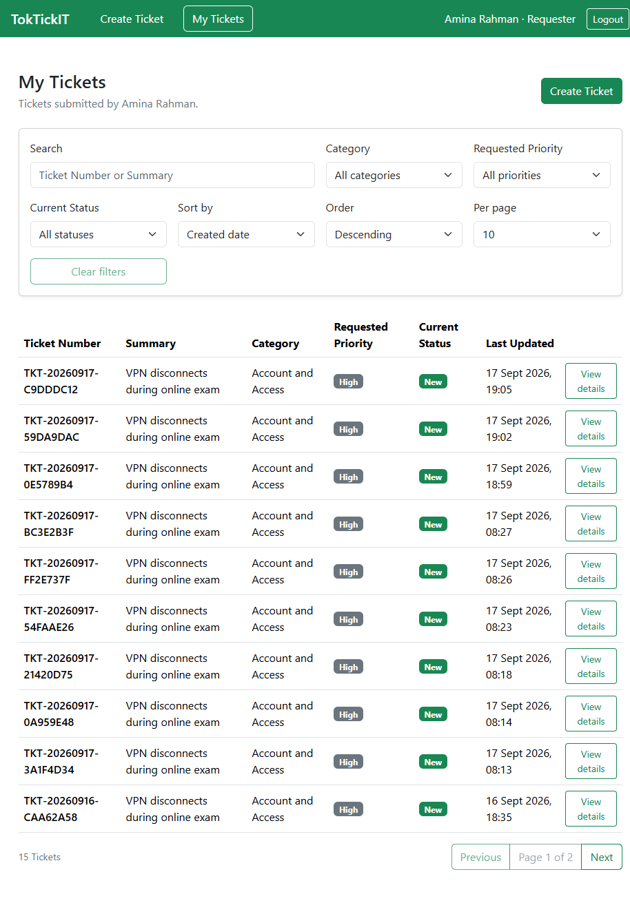
Figure 15. Historical Requester regression checkpoint: authenticated user context and My Tickets, without the Development Requester selector.
Answer Part 6 - Working IT Staff Ticket Queue UI
The operational queue displays seeded and synthetic audit Tickets, statuses, requested/IT priorities, owners, date metadata and detail actions. Eight stable DEMO seed Tickets cover the eight statuses. Thirteen additional EVID Tickets were created only in the isolated audit database to show real pagination and operations. Counts are demonstration data, not real service activity. Queue priority values appear as text; status is badged. Do not interpret this as proof of separate priority badges.
Figure 16. Real populated queue: assigned/unassigned records, status labels, priority values and detail actions.
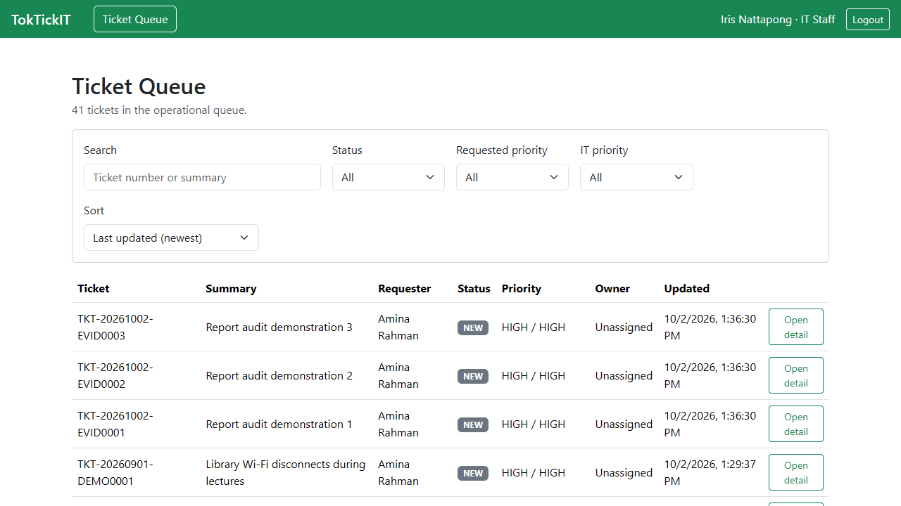
Figure 17. Real pagination: page 2 of the populated operational queue.Figure 18. Search by exact DEMO prefix and sort by Ticket Number ascending.Figure 19. Real status filter NEW narrows the eight seeded DEMO Tickets to the matching record.Figure 20. Real no-matching-results state after a nonmatching search.Figure 21. Empty-queue UI using a controlled successful empty API response. This is injected UI evidence, not a claim that the seeded database is empty.Figure 22. Queue API failure UI using a controlled HTTP 503 response.
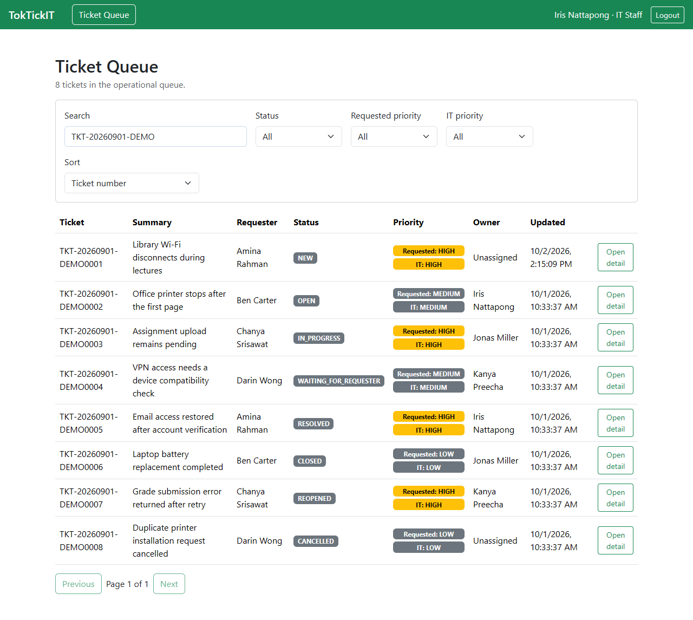
Figure 23. Issue #58 correction branch: Requested and IT Priority are separate labelled badges. This correction is not yet released main.
Answer Part 7 - Working IT Staff Ticket Detail UI
Real synthetic Ticket TKT-20261002-EVID0001 demonstrates unassigned state, claim, reassignment, separate Requested/IT Priority, permitted status change, Public Comments and private Internal Notes. The Requester can indicate that the problem appears resolved without changing formal status; direct API assertions verify this and that private notes are absent from the Requester response. Attachment upload/removal continuity and cross-owner protection are covered by the passing Lab 2 regression E2E/API output in Part 3.
Figure 24. Real unassigned staff Ticket Detail before operations.Figure 25. Claim Ticket assigns Iris Nattapong as owner.Figure 26. Urgent IT Priority is distinct from Requested Priority High. Public Comment and visually separated private Internal Note were saved.Figure 27. Real reassignment from Iris Nattapong to Jonas Miller.Figure 28. Permitted transition to IN_PROGRESS with success feedback.Figure 29. Real OPEN to CLOSED attempt rejected by backend; formal status remains OPEN.
Authorization evidence is actual output in Part 3: Requester staff-note access 403, cross-owner Ticket 404, owned public response 200 with no internalNotes field, Requester formal-status write 403, blank comment and overlength note 400. Administrator priority permission is also covered by its passing UI/API/E2E regression. The private-note panel is not available to Requesters.
Answer Part 8 - Working Administrator User Management UI
Administrator User Management provides searchable/filterable users, one role per account, active/inactive status, create/edit and initial-password reset. Evidence Requester is a synthetic audit-only account. Backend protections reject duplicate email and last-active-Administrator demotion; self-deactivation is disabled in the UI and rejected by API tests. Password reset revokes existing sessions and requires first-login change; the actual next-login gate appears in Part 5. Wrong-role access is denied directly by the backend in Part 3.
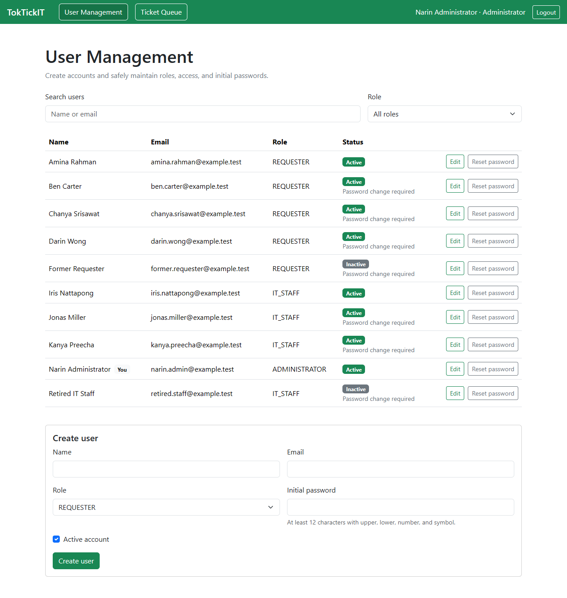
Figure 30. Real Administrator user list with role and Active/Inactive states.Figure 31. Real search for Iris combined with IT_STAFF role filtering.Figure 32. Real synthetic account creation; success requires first-login password change.Figure 33. Real duplicate-email rejection from backend.Figure 34. Self-deactivation control disabled with an explicit explanation.Figure 35. Real last-active-Administrator demotion rejected; Administrator remains protected.
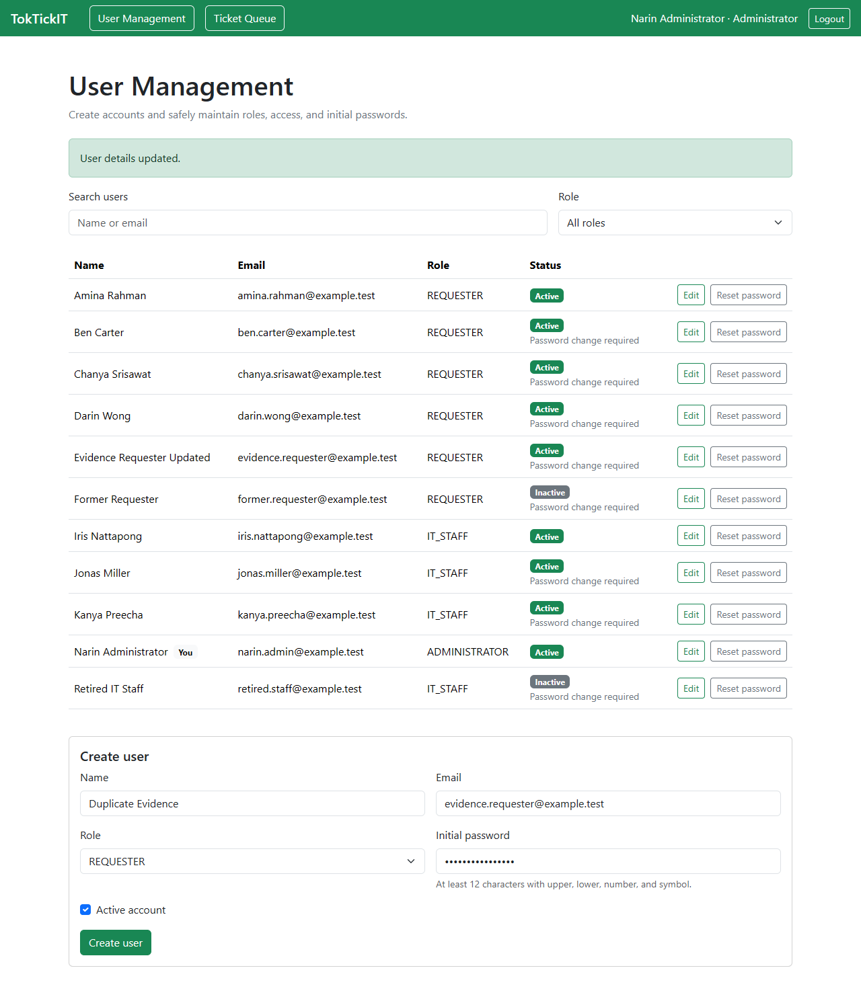
Figure 36. Real synthetic user details updated successfully.Figure 37. Real initial-password reset succeeded, with session-revocation/next-login warning.Figure 38. Safe User Management API failure using a controlled HTTP 503 response.
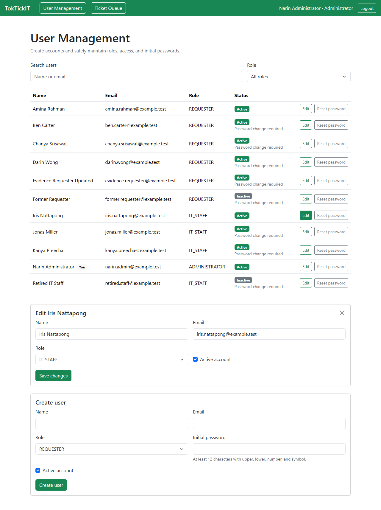
Figure 39. Issue #58 correction branch: switched directly from Edit Narin to Edit Iris; the form shows Iris's matching account fields, not Narin's retained values. Regression test first failed on old source and now passes.
Answer Part 9 - Zen Green UI and Responsive Evidence
docs/lab-03/ui-spec.md
Lab 3 Zen Green UI Specification
Shared Shell
Retain Lab 2 tokens: primary #006B3C, pale green surfaces, labelled forms, visible focus, text-bearing badges, field-level validation, and responsive cards. The shell shows current authenticated name and role, Logout, and only permitted navigation: Requester (My Tickets, Create Ticket), IT Staff (Ticket Queue), Administrator (Ticket Queue in read-only oversight plus User Management). The Development Requester selector and Change Requester control are removed.
Required Screens and Modes
Screen
Main mode and controls
Required feedback
Login
email, password, submit
validation, busy, safe invalid/inactive/failure
Change Password
current/initial password, new password, confirmation
rules, validation, busy, success, safe failure
Requester Ticket Detail
inherited read-only detail, attachments, Public Comments, resolution indication
Public Comments use a shared green-accented section labelled “Visible to Requester, IT Staff, and Administrator.” Internal Notes use a separate neutral section labelled “Visible to IT Staff and Administrator”; a Requester never sees it. Editable operational fields are visually distinct from read-only Ticket facts. Status, Requested Priority, IT Priority, and role badges always include text.
Responsive and Accessibility Rules
- Desktop >= 992px: dense but readable queue table and two-column detail where useful.
- Tablet 768-991px: controls wrap without overlap; table can reduce columns.
- Mobile < 768px: queue uses cards; forms stack; no horizontal document scroll.
- Controls are keyboard reachable, labels precede fields, focus is visible, and feedback includes text rather than color alone.
- Visual evidence covers desktop, tablet, and mobile for Login, Change Password, Queue, Staff Detail, and User Management.
Five required screens were captured at desktop 1280x900, tablet 820x900 and mobile 390x844. The released-main responsive E2E previously passed document-width assertions on all views. The latest screenshots below are corrective-branch captures for Issue #58, not evidence that its changes are already on main. Long screens continue across slices instead of being compressed into unreadable thumbnails.
Figure 40. Login - desktop. Issue #58 corrective-branch responsive capture; not final-main evidence for the pending corrections.Figure 41. Login - tablet. Issue #58 corrective-branch responsive capture; not final-main evidence for the pending corrections.Figure 42. Login - mobile. Issue #58 corrective-branch responsive capture; not final-main evidence for the pending corrections.Figure 43. Change Password - desktop. Issue #58 corrective-branch responsive capture; not final-main evidence for the pending corrections.Figure 44. Change Password - tablet. Issue #58 corrective-branch responsive capture; not final-main evidence for the pending corrections.Figure 45. Change Password - mobile. Issue #58 corrective-branch responsive capture; not final-main evidence for the pending corrections.Figure 46. Ticket Queue - desktop. Issue #58 corrective-branch responsive capture; not final-main evidence for the pending corrections.Figure 47. Ticket Queue - tablet. Issue #58 corrective-branch responsive capture; not final-main evidence for the pending corrections.Figure 48. Ticket Queue - mobile. Issue #58 corrective-branch responsive capture; not final-main evidence for the pending corrections.Figure 49. Staff Ticket Detail - desktop. Issue #58 corrective-branch responsive capture; not final-main evidence for the pending corrections.Figure 50. Staff Ticket Detail - tablet. Issue #58 corrective-branch responsive capture; not final-main evidence for the pending corrections.Figure 51. Staff Ticket Detail - mobile. Issue #58 corrective-branch responsive capture; not final-main evidence for the pending corrections.Figure 52. User Management - desktop. Issue #58 corrective-branch responsive capture; not final-main evidence for the pending corrections.Figure 53. User Management - tablet. Issue #58 corrective-branch responsive capture; not final-main evidence for the pending corrections.Figure 54. User Management - mobile. Issue #58 corrective-branch responsive capture; not final-main evidence for the pending corrections.
Visual checklist: green primary buttons/navigation and neutral secondary actions; current user/role visible; editable controls separated from read-only Ticket identity; separate status/priority presentation; visible validation and safe error text; keyboard-labelled controls; mobile cards replace wide user table; no clipped/overlapping content or horizontal document overflow in the tested viewports. Automated width assertions do not prove every focus interaction or colour-contrast ratio; those should not be presented as measured accessibility conformance.
Remaining submission checkpoints: reviewer integration and release of Issue #58; rerun final-main tests and recapture final Kanban; student confirmation of AI/model attribution and personal reflection; final PDF readability/layout inspection and removal of redundant repeated screenshot areas. This is a comprehensive evidence draft, not the concise submission version. It must not be labelled fully submission-ready solely because the existing product tests pass.